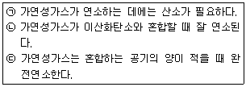
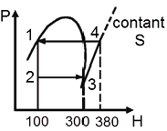
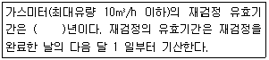

가스산업기사 (2017-09-23 기출문제)
1과목: 연소공학
1. 1kg의 공기를 20℃, 1kgf/cm2인 상태에서 일정 압력으로 가열팽창시켜 부피를 처음의 5배로 하려고 한다. 이 때 온도는 초기온도와 비교하여 몇 ℃ 차이가 나는가?
- 1172
- 1292
- 1465
- 1561
(정답률: 59%)

2. 95℃ 의 온수를 100kg/h 발생시키는 온수보일러가 있다. 이 보일러에서 저위발열량이 45MJ/Nm3인 LNG를 1m3/h 소비 할 때 열효율은 얼마인가? (단, 급수의 온도는 25℃이고, 물의 비열은 4.l84kJ/kg·K이다.)
- 60.07%
- 65.08%
- 70.09%
- 75.10%
(정답률: 65%)
3. 완전기체에서 정적비열(Cv), 정압비열(Cp)의 관계식을 옳게 나타낸 것은? (단, R은 기체상수이다.)
- Cp / Cv = R
- Cp－Cv = R
- Cv / Cp = R
- Cp＋Cv = R
(정답률: 85%)
4. 다음 중 열역학 제2법칙에 대한 설명이 아닌 것은?
- 열은 스스로 저온체에서 고온체로 이동할 수 없다.
- 효율이 100%인 열기관을 제작하는 것은 불가능하다.
- 자연계에 아무런 변화도 남기지 않고 어느 열원의 열을 계속해서 일로 바꿀 수 없다.
- 에너지의 한 형태인 열과 일은 본질적으로 서로 같고, 열은 일로, 일은 열로 서로 전환이 가능하며, 이 때 열과일 사이의 변환에는 일정한 비례관계가 성립한다.
(정답률: 80%)
5. 프로판 5L 를 완전연소시키기 위한 이론공기량은 약 몇 L인가?(오류 신고가 접수된 문제입니다. 반드시 정답과 해설을 확인하시기 바랍니다.)
- 25
- 87
- 91
- 119
(정답률: 63%)
6. 이상기체를 일정한 부피에서 냉각하면 온도와 압력의 변화는 어떻게 되는가?
- 온도저하, 압력강하
- 온도상승, 압력강하
- 온도상승, 압력일정
- 온도저하, 압력상승
(정답률: 81%)
7. 가연성 물질을 공기로 연소시키는 경우에 공기 중의 산소 농도를 높게 하면 연소속도와 발화온도는 어떻게 되는가?
- 연소속도는 느리게 되고, 발화온도는 높아진다.
- 연소속도는 빠르게 되고, 발화온도도 높아진다.
- 연소속도는 빠르게 되고, 발화온도는 낮아진다.
- 연소속도는 느리게 되고, 발화온도도 낮아진다.
(정답률: 85%)
8. 프로판과 부탄이 각각 50% 부피로 혼합되어 있을 때 최소산소농도(MOC)의 부피 %는? (단, 프로판과 부탄의 연소하한계는 각각 2.2v%, 1.8v%이다.)
- 1.9%
- 5.5%
- 11.4%
- 15.1%
(정답률: 52%)
9. 방폭구조 및 대책에 관한 설명으로 옳지 않은 것은?
- 방폭대책에는 예방, 국한, 소화, 피난 대책이 있다.
- 가연성가스의 용기 및 탱크 내부는 제2종 위험 장소이다.
- 분진폭발은 1차 폭발과 2차 폭발로 구분되어 발생한다.
- 내압방폭구조는 내부폭발에 의한 내용물 손상으로 영향을 미치는 기기에는 부적당하다.
(정답률: 81%)
10. “압력이 일정할 때 기체의 부피는 온도에 비례하여 변화 한다.” 라는 법칙은?
- 보일(Boyle)의 법칙
- 샤를(Charles)의 법칙
- 보일-샤를의 법칙
- 아보가드로의 법칙
(정답률: 75%)
11. 다음 가스 중 공기와 혼합될 때 폭발성 혼합가스를 형성 하지 않는 것은?
- 아르곤
- 도시가스
- 암모니아
- 일산화탄소
(정답률: 86%)
12. 액체 연료를 수 μm에서 수백 μm으로 만들어 증발 표면적을 크게 하여 연소시키는 것으로서 공업적으로 주로 사용되는 연소방법은?
- 액면연소
- 등심연소
- 확산연소
- 분무연소
(정답률: 72%)
13. 폭굉이 발생하는 경우 파면의 압력은 정상연소에서 발생하는 것보다 일반적으로 얼마나 큰가?
- 2배
- 5배
- 8배
- 10배
(정답률: 74%)
14. 메탄 80vol%와 아세틸렌 20vol%로 혼합된 혼합가스의 공기 중 폭발하한계는 약 얼마인가? (단, 메탄과 아세틸렌의 폭발하한계는 5.0%와 2.5%이다.)
- 6.2%
- 5.6%
- 4.2%
- 3.4%
(정답률: 79%)
15. 연소부하율에 대하여 가장 바르게 설명한 것은?
- 연소실의 염공면적당 입열량
- 연소실의 단위체적당 열발생률
- 연소실의 염공면적과 입열량의 비율
- 연소혼합기의 분출속도와 연소속도와의 비율
(정답률: 71%)
16. 열분해를 일으키기 쉬운 불안전한 물질에서 발생하기 쉬운 연소로 열분해로 발생한 휘발분이 자기점화온도보다 낮은 온도에서 표면연소가 계속되기 때문에 일어나는 연소는?
- 분해연소
- 그을음연소
- 분무연소
- 증발연소
(정답률: 84%)
17. 다음 보기는 가연성가스의 연소에 대한 설명이다. 이중 옳은 것으로만 나열된 것은?

- ㉠, ㉡
- ㉡, ㉢
- ㉠
- ㉢
(정답률: 87%)
18. 자연발화온도(Autoignition temperature :AIT)에 영향을 주는 요인 중에서 증기의 농도에 관한 사항이다. 가장 바르게 설명한 것은?
- 가연성 혼합기체의 AIT는 가연성 가스와 공기의 혼합비가 1:1 일 때 가장 낮다.
- 가연성 증기에 비하여 산소의 농도가 클수록 AIT는 낮아진다.
- AIT는 가연성 증기의 농도가 양론 농도보다 약간 높을 때가 가장 낮다.
- 가연성 가스와 산소의 혼합비가 1:1 일 때 AIT는 가장 낮다.
(정답률: 64%)
19. 가스를 연료로 사용하는 연소의 장점이 아닌 것은?
- 연소의 조절이 신속, 정확하며 자동제어에 적합하다.
- 온도가 낮은 연소실에서도 안정된 불꽃으로 높은 연소 효율이 가능하다.
- 연소속도가 커서 연료로서 안전성이 높다.
- 소형 버너를 병용 사용하여 로내 온도분포를 자유로이 조절할 수 있다.
(정답률: 76%)
20. 액체 프로판(C3H8) l0kg이 들어 있는 용기에 가스미터가 설치되어 있다. 프로판 가스가 전부 소비되었다고 하면 가스미터에서의 계량 값은 약 몇 m3로 나타나 있겠는가? (단, 가스미터에서의 온도와 압력은 각각 T=15℃ 와 Pg=200mmHg이고, 대기압은 0.101MPa이다.)
- 5.3
- 5.7
- 6.1
- 6.5
(정답률: 36%)
2과목: 가스설비
21. 연소기의 이상연소 현상 중 불꽃이 염공 속으로 들어가 혼합관 내에서 연소하는 현상을 의미하는 것은?
- 황염
- 역화
- 리프팅
- 블로우 오프
(정답률: 82%)
22. 양정[H] 20m, 송수량[Q] 0.25m3/min, 펌프효율[ƞ] 0.65인 2단 터빈 펌프의 축동력은 약 몇 kW인가?
- 1.26
- 1.37
- 1.57
- 1.72
(정답률: 51%)
23. 고압가스 충전용기의 가스 종류에 따른 색깔이 잘못 짝지어진 것은?
- 아세틸렌 : 황색
- 액화암모니아 : 백색
- 액화탄산가스 : 갈색
- 액화석유가스 : 회색
(정답률: 81%)
24. 용기의 내압시험 시 항구증가율이 몇 % 이하인 용기를 합격한 것으로 하는가?
- 3
- 5
- 7
- 10
(정답률: 83%)
25. 금속 재료에서 어느 온도 이상에서 일정 하중이 작용할 때 시간의 경과와 더불어 그 변형이 증가하는 현상을 무엇 이라고 하는가?
- 크리프
- 시효경과
- 웅력부식
- 저온취성
(정답률: 88%)
26. 도시가스 배관공사 시 주의사항으로 틀린 것은?
- 현장마다 그 날의 작업공정을 정하여 기록한다.
- 작업현장에는 소화기를 준비하여 화재에 주의한다.
- 현장 감독자 및 작업원은 지정된 안전모 및 뼈 완장을 착용한다.
- 가스의 공급을 일시 차단할 경우에는 사용자에게 사전 통보하지 않아도 된다.
(정답률: 91%)
27. 지름이 150mm, 행정 100mm, 회전수 800rpm, 체적효율 85%인 4기통 압축기의 피스톤 압출량은 몇 m3/h인가?
- 10.2
- 28.8
- 102
- 288
(정답률: 50%)
28. 가정용 LP가스 용기로 일반적으로 사용되는 용기는?
- 납땜용기
- 용접용기
- 구리용기
- 이음새 없는 용기
(정답률: 73%)
29. 도시가스 제조 설비에서 수소화분해(수첨분해)법의 특징에 대한 설명으로 옳은 것은?
- 탄화수소의 원료를 수소기류 중에서 열분해 혹은 접촉 분해로 메탄을 주성분으로 하는 고열량의 가스를 제조 하는 방법이다.
- 탄화수소의 원료를 산소 또는 공기 중에서 열분해 혹은 접촉분해로 수소 및 일산화탄소를 주성분으로 하는 가스를 제조하는 방법이다
- 코크스를 원료로 하여 산소 또는 공기 중에서 열분해 혹은 접촉분해로 메탄을 주성분으로 하는 고열량의 가스를 제조하는 방법이다.
- 메탄을 원료로 하여 산소 또는 공기 중에서 부분연소로 수소 및 일산화탄소를 주성분으로 하는 저열량의 가스를 제조하는 방법이다.
(정답률: 58%)
30. 냉동장치에서 냉매의 일반적인 구비조건으로 옳지 않은 것은?
- 증발열이 커야 한다.
- 증기의 비체적이 작아야 한다.
- 임계온도가 낮고 응고점이 높아야 한다.
- 중기의 비열은 크고 액체의 비열은 작아야 한다.
(정답률: 60%)
31. 대기 중에 10m 배관을 연결할 때 중간에 상온스프링을 이용하여 연결하려 한다면 중간 연결부에서 얼마의 간격으로 하여야 하는가? (단, 대기 중의 온도는 최저 -20℃, 최고 30℃이고, 배관의 열팽창 계수는 7.2x10-5/℃이다.)
- 18mm
- 24mm
- 36mm
- 48mm
(정답률: 45%)
32. 펌프의 운전 중 공동현상(cavitation)을 방지하는 방법으로 적합하지 않은 것은?
- 흡입양정을 크게 한다.
- 손실수두를 적게 한다.
- 펌프의 회전수를 줄인다.
- 양흡입 펌프 또는 두 대 이상의 펌프를 사용한다.
(정답률: 80%)
33. 표면은 견고하게 하여 내마멸성을 높이고, 내부는 강인 하게 하여 내충격성을 향상시킨 이중조직을 가지게 하는 열처리는?
- 불림
- 담금질
- 표면경화
- 풀림
(정답률: 71%)
34. 다음 중 신축조인트 방법이 아닌 것은?
- 루프 (Loop) 형
- 슬라이드 (Slide) 형
- 슬립-온(Slip-On) 형
- 벨로우즈 (Bellows) 형
(정답률: 74%)
35. 왕복 압축기의 특징이 아닌 것은?
- 용적형이다.
- 효율이 낮다.
- 고압에 적합하다.
- 맥동 현상을 갖는다.
(정답률: 77%)
36. 다음 지상형 탱크 중 내진설계 적용대상 시설이 아닌 것은?
- 고법의 적용을 받는 3톤 이상의 암모니아 탱크
- 도법의 적용을 받는 3톤 이상의 저장탱크
- 고법의 적용을 받는 10톤 이상의 아르곤 탱크
- 액법의 적용을 받는 3톤 이상의 액화석유가스 저장탱크
(정답률: 59%)
37. 액화석유가스 지상 저장탱크 주위에는 저장능력이 얼마 이상일 때 방류둑을 설치하여야 하는가?
- 6톤
- 20톤
- 100톤
- 1000톤
(정답률: 62%)
38. 다음과 같이 작동되는 냉동 장치의 성적계수(εʀ) 는?

- 0.4
- 1.4
- 2.5
- 3.0
(정답률: 61%)
39. 기계적인 일을 사용하지 않고 고온도의 열을 직접 적용 시켜 냉동하는 방법은?
- 증기압축식냉동기
- 흡수식냉동기
- 증기분사식냉동기
- 역브레이톤냉동기
(정답률: 63%)
40. 특정고압가스이면서 그 성분이 독성가스인 것으로 나열된 것은?
- 산소, 수소
- 액화염소, 액화질소
- 액화암모니아, 액화염소
- 액화암모니아, 액화석유가스
(정답률: 85%)
3과목: 가스안전관리
41. 다음 중 독성가스의 제독조치로서 가장 부적당한 것은?
- 흡수제에 의한 흡수
- 중화제에 의한 중화
- 국소배기장치에 의한 포집
- 제독제 살포에 의한 제독
(정답률: 78%)
42. 사람이 사망한 도시가스 사고 발생 시 사업자가 한국가스안전공사에 상보(서면으로 제출하는 상세한 통보)를 할 때 그 기한은 며칠 이내 인가?
- 사고발생 후 5일
- 사고발생 후 7일
- 사고발생 후 14일
- 사고발생 후 20일
(정답률: 65%)
43. 20kg의 LPG가 누출하여 폭발할 경우 TNT폭발 위력으로 환산하면 TNT 약 몇 kg에 해당하는가? (단, LPG의 폭발효율은 3%이고 발열량은 12000kcal/kg, TNT의 연소열은 1100kcal/kg이다.)
- 0.6
- 6.5
- 16.2
- 26.6
(정답률: 58%)
44. 고압가스안전관리법에서 정한 특정설비가 아닌 것은?
- 기화장치
- 안전밸브
- 용기
- 압력용기
(정답률: 67%)
45. 소비 중에는 물론 이동, 저장 중에도 아세틸렌 용기를 세워두는 이유는?
- 정전기를 방지하기 위해서
- 아세틸렌의 누출을 막기 위해서
- 아세틸렌이 공기보다 가볍기 때문에
- 아세틸렌이 쉽게 나오게 하기 위해서
(정답률: 81%)
46. 도시가스 압력조정기의 제품성능에 대한 설명 중 틀린 것은?
- 입구 쪽은 압력조정기에 표시된 최대입구압력의 1.5배 이상의 압력으로 내압시험을 하였을 때 이상이 없어야 한다.
- 출구 쪽은 압력조정기에 표시된 최대출구압력 및 최대 폐쇄압력의 1.5배 이상의 압력으로 내압시험을 하였을 때, 이상이 없어야 한다.
- 입구 쪽은 압력조정기에 표시된 최대입구압력 이상의 압력으로 기밀시험하였을 때 누출이 없어야 한다.
- 출구 쪽은 압력조정기에 표시된 최대출구압력 및 최대 폐쇄압력의 1.5배 이상의 압력으로 기밀시험하였을 때 누출이 없어야 한다.
(정답률: 61%)
47. 고압가스의 운반기준에서 동일 차량에 적재하여 운반할 수 없는 것은?
- 염소와 아세틸렌
- 질소와 산소
- 아세틸렌과 산소
- 프로판과 부탄
(정답률: 82%)
48. 물분무장치 등은 저장탱크의 외면에서 몇 m이상 떨어진 위치에서 조작이 가능하여야 하는가?
- 5m
- 10m
- 15m
- 20m
(정답률: 65%)
49. 고압가스 특정제조시설에서 고압가스 배관을 시가지 외의 도로 노면 밑에 매설하고자 할 때 노면으로부터 배관 외면까지의 매설깊이는?
- 1.0m 이상
- l.2m 이상
- l.5m 이상
- 2.0m 이상
(정답률: 63%)
50. 국내에서 발생한 대형 도시가스 사고 중 대구 도시가스 폭발사고의 주원인은?
- 내부 부식
- 배관의 웅력부족
- 부적절한 매설
- 공사 중 도시가스 배관 손상
(정답률: 86%)
51. 초저온 용기 제조 시 적합여부에 대하여 실시하는 설계 단계 검사 항목이 아닌 것은?
- 외관검사
- 재료검사
- 마멸검사
- 내압검사
(정답률: 64%)
52. 우리나라는 1970년부터 시범적으로 동부이촌동의 3,000 가구를 대상으로 LPG/AIR 혼합방식의 도시가스를 공급하기 시작하여 사용한 적이 있다. LPG에 AIR를 혼합하는 주된 이유는?
- 가스의 가격을 올리기 위해서
- 공기로 LPG 가스를 밀어내기 위해서
- 재액화를 방지하고 발열량올 조정하기 위해서
- 압축기로 압축하려면 공기를 혼합해야 하므로
(정답률: 86%)
53. 도시가스 사용시설의 압력조정기 점검 시 확인하여야할 사항이 아닌 것은?
- 압력조정기의 A/S 기간
- 압력조정기의 정상 작동 유무
- 필터 또는 스트레이너의 청소 및 손상유무
- 건축물 내부에 설치된 압력조정기의 경우는 가스 방출 구의 실외 안전장소 설치여부
(정답률: 81%)
54. 가연성가스 및 독성가스의 충전용기 보관실의 주위 몇 m이내에서는 화기를 사용하거나 인화성 물질 또는 발화성 물질을 두지 않아야 하는가?
- 1
- 2
- 3
- 5
(정답률: 74%)
55. 가연성가스를 운반하는 경우 반드시 휴대하여야 하는 장비가 아닌 것은?
- 소화설비
- 방독마스크
- 가스누출검지기
- 누출방지 공구
(정답률: 81%)
56. 독성가스 저장탱크를 지상에 설치하는 경우 몇 톤 이상일 때 방류둑을 설치하여야 하는가?
- 5
- 10
- 50
- 100
(정답률: 74%)
57. 다량의 고압가스를 차량에 적재하여 운반할 경우 운전상의 주의사항으로 옳지 않은 것은?
- 부득이한 경우를 제외하고는 장시간 정차해서는 아니 된다.
- 차량의 운반책임자와 운전자가 동시에 차량에서 이탈하지 아니하여야 한다.
- 300km 이상의 거리를 운행하는 경우에는 중간에 충분한 휴식을 취한 후 운행하여야 한다.
- 가스의 명칭·성질 및 이동 중의 재해방지를 위하여 필요한 주의사항을 기재한 서면을 운반책임자 또는 운전자에게 교부하고 운반 중에 휴대를 시켜야 한다.
(정답률: 84%)
58. 시안화수소를 충전, 저장하는 시설에서 가스누출에 따른 사고예방을 위하여 누출검사 시 사용하는 시험지(액)는?
- 묽은 염산용액
- 질산구리벤젠지
- 수산화나트륨용액
- 묽은 질산용액
(정답률: 82%)
59. 특정설비의 부품을 교체할 수 없는 수리자격자는?
- 용기제조자
- 특정설비제조자
- 고압가스제조자
- 검사기관
(정답률: 67%)
60. 다음 중 불연성가스가 아닌 것은?
- 아르곤
- 탄산가스
- 질소
- 일산화탄소
(정답률: 72%)
4과목: 가스계측
61. 물의 화학반응을 통해 시료의 수분 함량을 측정하며 휘발성 물질 중의 수분을 정량하는 방법은?
- 램프법
- 칼피셔법
- 메틸렌블루법
- 다트와이라법
(정답률: 73%)
62. 25℃, 1atm 에서 0.21mol% 의 O2와 0.79mol%의 N2로 된 공기혼합물의 밀도는 약 몇 kg/m3인가?
- 0.118
- 1.18
- 0.134
- 1.34
(정답률: 57%)
63. 압력에 대한 다음 값 중 서로 다른 것은?
- 101325N/m2
- 1013.25hPa
- 76cmHg
- 10000mmAq
(정답률: 68%)
64. 이동상으로 캐리어가스를 이용, 고정상으로 액체 또는 고체를 이용해서 혼합성분의 시료를 캐리어가스로 공급 하여, 고정상을 통과할 때 시료 중의 각 성분을 분리하는 분석법은?
- 자동오르자트법
- 화학발광식 분석법
- 가스크로마토그래피법
- 비분산형 적외선 분석법
(정답률: 85%)
65. 감도(感度)에 대한 설명으로 틀린 것은?
- 감도는 측정량의 변화에 대한 지시량의 변화의 비로 나타낸다.
- 감도가 좋으면 측정 시간이 길어진다.
- 감도가 좋으면 측정 범위는 좁아진다.
- 감도는 측정 결과에 대한 신뢰도의 척도이다.
(정답률: 58%)
66. 400K는 약 몇 °R인가?
- 400
- 620
- 720
- 820
(정답률: 84%)
67. 되먹임 제어계에서 설정한 목표값을 되먹임 신호와 같은 종류의 신호로 바꾸는 역할을 하는 것은?
- 조절부
- 조작부
- 검출부
- 설정부
(정답률: 50%)
68. 어느 수용가에 설치한 가스미터의 기차를 측정하기 위하여 지시량을 보니 100m3를 나타내었다. 사용공차를 ±4%로 한다면 이 가스미터에는 최소 얼마의 가스가 통과되었는가?
- 40m3
- 80m3
- 96m3
- 104m3
(정답률: 82%)
69. 가스계량기의 구비조건이 아닌 것은?
- 감도가 낮아야 한다.
- 수리가 용이하여야 한다.
- 계량이 정확하여야 한다.
- 내구성이 우수해야 한다.
(정답률: 87%)
70. 가스크로마토그래피 분석계에서 가장 널리 사용되는 고체 지지체 물질은?
- 규조토
- 활성탄
- 활성알루미나
- 실리카겔
(정답률: 63%)
71. 자동제어계의 일반적인 동작순서로 맞는 것은?
- 비교 → 판단 → 조작 → 검출
- 조작 → 비교 → 검출 → 판단
- 검출 → 비교 → 판단 → 조작
- 판단 → 비교 → 검출 → 조작
(정답률: 77%)
72. 가스누출 검지기의 검지(sensor)부분에서 일반적으로 사용하지 않는 재질은?
- 백금
- 리튬
- 동
- 바나듐
(정답률: 71%)
73. 제어계의 상태를 교란시키는 외란의 원인으로 가장 거리가 먼 것은?
- 가스 유출량
- 탱크 주위의 온도
- 탱크의 외관
- 가스 공급압력
(정답률: 76%)
74. 수소의 품질검사에 사용되는 시약은?
- 네슬러시약
- 동·암모니아
- 요오드화칼륨
- 하이드로설파이드
(정답률: 68%)
75. 나프탈렌의 분석에 가장 적당한 분석방법은?
- 중화적정법
- 흡수평량법
- 요오드적정법
- 가스크로마토그래피법
(정답률: 71%)
76. 다음 ( )안에 알맞은 것은?

- 1년
- 2년
- 3년
- 5년
(정답률: 70%)
77. 유속이 6m/s인 물속에 피토(Pitot)관을 세울 때 수주의 높이는 약 몇 m인가?
- 0.54
- 0.92
- 1.63
- 1.83
(정답률: 45%)
78. 회로의 두 접점 사이의 온도차로 열기전력을 일으키고, 그 전위차를 측정하여 온도를 알아내는 온도계는?
- 열전대온도계
- 저항온도계
- 광고온도계
- 방사온도계
(정답률: 83%)
79. 증기압식 온도계에 사용되지 않는 것은?
- 아닐린
- 알코올
- 프레온
- 에틸에테르
(정답률: 73%)
80. 가스분석용 검지관법에서 검지관의 검지한도가 가장 낮은 가스는?
- 염소
- 수소
- 프로판
- 암모니아
(정답률: 48%)
먼저 초기 상태에서의 부피와 밀도를 구해보자.
기체의 상태방정식은 다음과 같다.
PV = nRT
여기서 P는 압력, V는 부피, n은 몰수, R은 기체상수, T는 온도이다.
1kgf/cm^2는 98.0665kPa이므로, 초기 상태에서의 압력은 98.0665kPa이다.
또한, 1kg의 공기는 몰수가 1/28.97mol이므로, 초기 상태에서의 몰수는 0.0345mol이다.
기체상수 R은 8.314J/mol·K이다.
따라서 초기 상태에서의 부피는 다음과 같이 구할 수 있다.
V = nRT/P = (0.0345mol)(8.314J/mol·K)(293K)/(98.0665kPa) = 0.001m^3
초기 상태에서의 밀도는 다음과 같이 구할 수 있다.
ρ = m/V = 1kg/0.001m^3 = 1000kg/m^3
이제 가열팽창 과정에서 부피가 5배로 증가하므로, 최종 부피는 다음과 같다.
V' = 5V = 0.0⑤m^3
부피가 5배로 증가하면, 밀도는 1/5배로 감소한다.
따라서 최종 상태에서의 밀도는 다음과 같다.
ρ' = ρ/5 = 200kg/m^3
이제 최종 상태에서의 압력을 구해보자.
가열팽창 과정에서 압력과 온도는 일정하므로, 초기 상태에서의 압력과 동일하다.
따라서 최종 상태에서의 상태방정식은 다음과 같다.
PV' = nRT
여기서 P는 최종 상태에서의 압력, V'는 최종 상태에서의 부피, n은 초기 상태에서의 몰수와 동일하다.
따라서 최종 상태에서의 압력은 다음과 같다.
P = nRT/V' = (0.0345mol)(8.314J/mol·K)(293K)/(0.0⑤m^3) = 5,039,640Pa
따라서 최종 상태에서의 온도는 다음과 같다.
P = ρ'RT'
T' = P/ρ'R = 5,039,640Pa/(200kg/m^3)(8.314J/mol·K) = 303.15K
따라서 초기 온도와 최종 온도의 차이는 다음과 같다.
ΔT = T' - T = 303.15K - 293K = 10.15K
따라서 정답은 10.15를 소수점 이하를 버리고 1172이다.